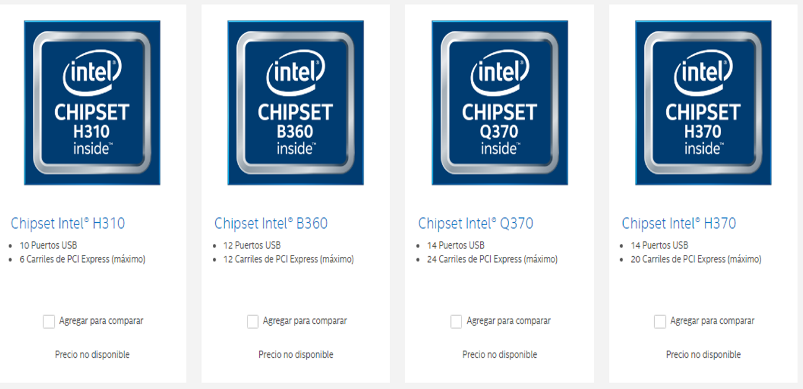

Selección de componentes para ensamble de equipos de cómputo
Unidad 3

Un chipset (traducido como circuito integrado auxiliar) es el conjunto de circuitos integrados diseñados con base en la arquitectura de un procesador (en algunos casos, diseñados como parte integral de esa arquitectura), permitiendo que ese tipo de procesadores funcionen en una placa base. Sirven de puente de comunicación con el resto de componentes de la placa, como son la memoria, las tarjetas de expansión, los puertos USB, ratón, teclado, etc.
El chipset determina muchas de las características de una placa base y por lo general la referencia de la misma está relacionada con la del chipset.
El Chipset es el que hace posible que la placa base funcione como eje del sistema, dando soporte a varios componentes e interconectándolos de forma que se comuniquen entre ellos haciendo uso de diversos buses.
Es uno de los pocos elementos que tiene conexión directa con el procesador, gestiona la mayor parte de la información que entra y sale por el bus principal del procesador, del sistema de vídeo y muchas veces de la memoria RAM.
El Chipset es el que hace posible que la placa base funcione como eje del
sistema, dando soporte a varios componentes e interconectándolos de forma que
se comuniquen entre ellos haciendo uso de diversos buses. Gestiona la mayor parte de la información que entra y sale por el bus principal del procesador, del sistema de vídeo y muchas veces de la memoria RAM.
En el caso de los computadores PC, es un esquema de arquitectura abierta que
establece modularidad: el Chipset debe tener interfaces estándar para los demás
dispositivos. Esto permite escoger entre varios dispositivos estándar, por ejemplo
en el caso de los buses de expansión, algunas tarjetas madre pueden tener bus PCI-Express y soportar diversos tipos de tarjetas de distintos anchos de bus.
En el caso de equipos portátiles o de marca, el chipset puede ser diseñado a la
medida y aunque no soporte gran variedad de tecnologías, presentará alguna
interfaz de dispositivo
La terminología de los integrados ha cambiado desde que se creó el concepto del
chipset a principio de los años 1990, pero todavía existe equivalencia haciendo
algunas aclaraciones:
El puente norte, northbridge, MCH (memory controller hub) o GMCH (graphic MCH), se usa como puente de enlace entre el microprocesador y la memoria. Controla las funciones de acceso hacia y entre el microprocesador, la memoria RAM, el puerto gráfico AGP o el PCI-Express de gráficos, y las comunicaciones con el puente sur.
Al principio tenía también el control de PCI, pero esa funcionalidad ha pasado al puente sur.
El puente sur, south bridge o ICH (input controller hub), controla los dispositivos asociados como son la controladora de discos IDE, puertos USB, FireWire, SATA, RAID, ranuras PCI, ranura AMR, ranura CNR, puertos infrarrojos, disquetera, LAN, PCI-Express 1x y una larga lista de todos los elementos que podamos imaginar integrados en la placa madre. Es el encargado de comunicar el procesador con el resto de los periféricos.